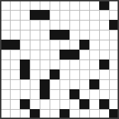

Crucigrama Gamberro
Nº 006

Crucigramas anteriores



Crucigramas online gratuitos, publicados de vez en cuando. Cada Crucigrama Gamberro es distinto — mismo espíritu, pistas nuevas.
Crucigramas para gente a la que las pistas demasiado fáciles le parecen una falta de respeto.
Nº 006

Crucigramas online gratuitos, publicados de vez en cuando. Cada Crucigrama Gamberro es distinto — mismo espíritu, pistas nuevas.